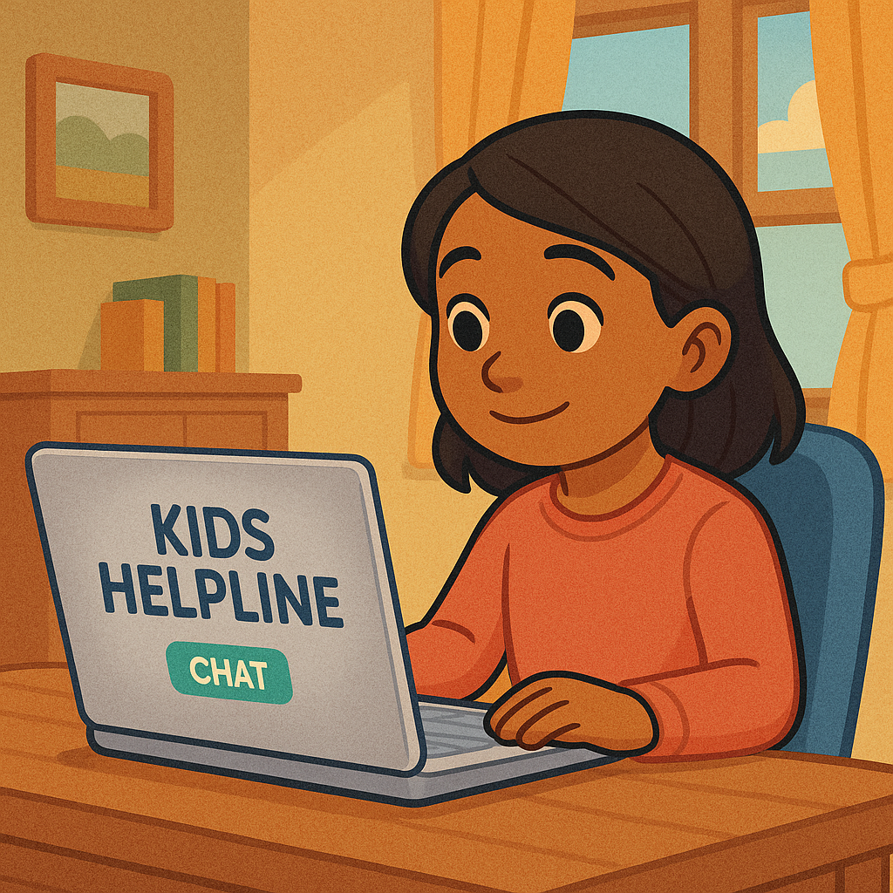
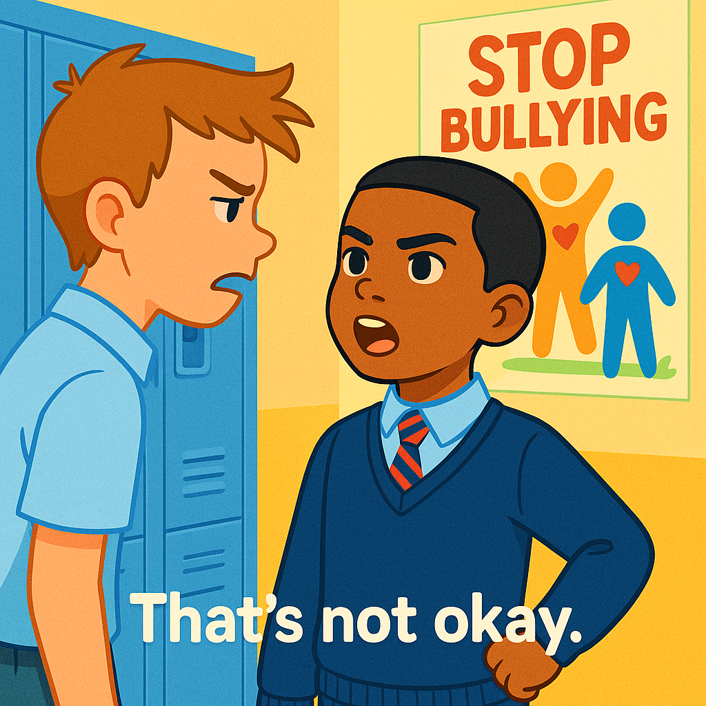

Responding to Bullying
Bullying can be a challenging and painful experience, but it's crucial to remember: you are not alone, and there are effective ways to respond and get the support you deserve. If you are experiencing bullying, it's important to remember there are things you can do.
No one deserves to be bullied. If you or someone you know is experiencing bullying, know that there are resources and strategies available to help. This guide offers practical advice and pathways to support.
Strategies for Victims
-
STOP, BLOCK, TALK: The STOP, BLOCK, TALK method is a simple yet powerful strategy designed to help individuals, especially young people, effectively respond to bullying, particularly in digital environments (cyberbullying), but its core principles can also apply to face-to-face situations.
- STOP: If you can, tell the bully to stop in a clear, firm voice. You don't need to argue or explain, just say "Stop," or "Leave me alone." If it's safe to do so, walk away immediately.
- BLOCK: If it's cyberbullying, block the person who is bullying you on all platforms. Do not respond to their messages. Take screenshots as evidence before blocking.
- TALK: Tell a trusted adult. This could be a parent, teacher, school counsellor, or another adult you feel comfortable with. They can help you deal with the situation and ensure your safety. Remember, telling an adult is not "dobbing"; it's asking for help when you need it.
- Seek Help From Support: If the bullying has occurred at school, it is crucial that the bully's actions are addressed by a trusted adult so that they don't have a negative impact on you. However, if you don't want to express your feelings to a teacher or a trusted adult at school, there are many organizations dedicated to helping young people who are being bullied, all from your own device. Anti-bullying organizations are there to support you in times of need, to keep your data private, safe, and away from people you may not want involved. These resources can provide guidance, support, and strategies for dealing with bullying. (See our Helpful Resources page for links).


Remember, it's not your fault, and you deserve to feel safe and respected. There are people who care and resources available to help you. Reaching out is a sign of strength.